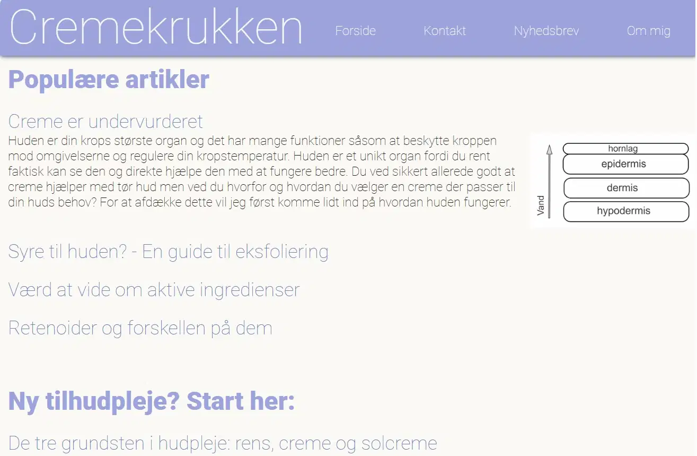

Lijo0004@stud.kea.dk
Mobil: +1 234-567-8901
Om mig
Mit navn er Line og jeg bor i Nordvestkarteret på Nørrebro. Jeg har tidligere læst Ernæring og Sundhed og jeg er nu startet på multimediedesign, fordi jeg synes det lød spændende at prøve at arbejde med noget kreativt.
Grundlæggende web
- Grundlæggende viden om CSS
- Grundlæggende viden om html
Webdesign
- Viden om UX og UI
- Anvende designprincipper
- Bruge figma
Animation
- Basic javascript
- CSS animation
- Anvende illustrator
Re-design
- Redigere i premiere-pro
- heuristisk test
- BERT
KEA - Multimediedesign
Jeg har nu færdiggjort første semester på MMD hvor jeg har lært at bruge CSS, html samt javascript, premiere-pro, illustrator og figma på et grundlæggende niveau. Her har jeg også lært om webkonventioner og designprincipper som gestaltlovene samt hvordan de anvendes til at sikre flot og brugervenligt design.
Profesionsbachelor i Ernæring og Sundhed
På københavnsprofessionshøjskole tog jeg min professionsbachelor i Ernæring og Sundhed hvor jeg lærte om kost og ernæring samt fødevarerproduktion og formidling.
Tidligere projekter
Studiestartsprøve

I grundlæggende web kan du se mit første projekt hvor jeg lærte om css, html, at bruge grid, flex og om responsivt design samt...
Den fortryllede skov

Kig her og se hvordan jeg udviklede et spil med CSS animation og JavaScript...
Bag om Cremekrukken
Her kan i læse om bloggen Cremekrukken og hvordan den kom til helt fra idé og reachearch helt til responsiv hjemmeside samt min udfordringer...
Pleasant

Læs her hvordan vi i et gruppeprojekt lavede et udkast til et RE-design for butikken Pleasant...